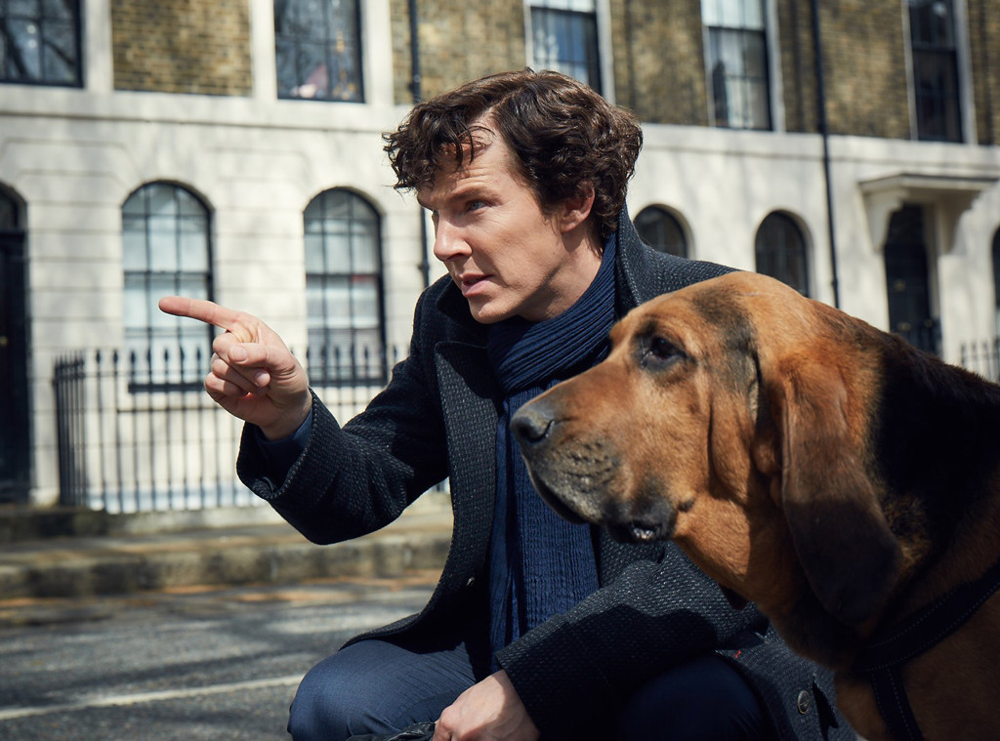
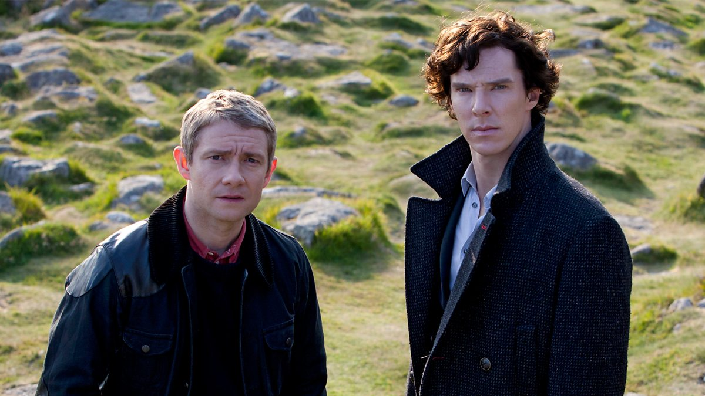

A Study In Pink

The Sign Of Three

The Six Hatchers

"I'm an experienced medical doctor
recently returned from Afganistan"
A doctor by education, a military surgeon, graduated from the University of London, in 1878. I act as the chronicler of Holmes's deeds. During the Angli-Afgan War (1878-1880) he was wounded in the shoulder. By his own admission, he could not stand any noise.
I would be described as typical Victorian Englishman. Modest, intelligent and courageous. Gradually, he learned a lot from Sherlock Holmes and mastered the deductive method well.
I'm a constant companion of Sherlock Holmes. A doctor by education.